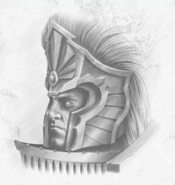

Magnus the Red
| Magnus the Red | |
|---|---|
| The Crimson King, the Red Cyclops | |
 The Daemon Primarch of Tzeentch, from sealed Ordo Malleus files Artwork © Games Workshop | |
| Primarch of the Thousand Sons | |
| Tenure | 840.M30 – present |
| Predecessor | Position established |
| Successor | Incumbent |
| Daemon Primarch of Tzeentch | |
| Seat | The Planet of the Sorcerers |
| Also known as | The Crimson King; the Red Cyclops |
| Allegiance | Imperium of Mankind (until 004.M31); Chaos (Tzeentch) |
| Legion | |
| Homeworld | Prospero (destroyed 004.M31) |
| Created | Terra, c. 792.M30, in the gene-laboratories of the Emperor of Mankind |
| Discovered | Prospero, 840.M30 |
| Status | Alive as a Daemon Prince of Tzeentch; resident on the Planet of the Sorcerers |
| Gene-father | The Emperor of Mankind |
| Counsellors | Ahzek Ahriman, Chief Librarian; Amon; Kallimakus |
| Brothers | The other primarchs; closest to Lorgar, Jaghatai Khan and Sanguinius |
| Rival | Leman Russ, who destroyed Prospero |
| Wargear | The Horned Raiment; the Blade of Ahn-Nunura |
| Known for | The "Folly of Magnus"; the Fall of Prospero; the Rubric of Ahriman; the Battle of Luna; the invasion of Fenris |
Magnus the Red, called the Crimson King and, by those who did not love him, the Red Cyclops, was the primarch of the XV Legion of the Space Marine Legions, the Thousand Sons. Of all the primarchs he was the most gifted in the use of the Warp, and he spent the Great Crusade trying to understand it. His library on Prospero held more knowledge of the Immaterium than any other in the Imperium. His curiosity, his pride and a faith in his own ability to control what he found led to the violation of the Emperor's most closely guarded works and to the ruin of his Legion.[1]
In the last years of the Great Crusade Magnus was forbidden the use of sorcery by the Council of Nikaea. Shortly before Horus rebelled, he saw the coming civil war in a vision and tried to warn the Emperor by projecting himself to Terra. The attempt tore through the wards of the Emperor's Webway project and was understood as a rebellion. Leman Russ was sent to bring him to account, and the Space Wolves destroyed Prospero in the attempt. Magnus, saved from death by Tzeentch, took his Legion to the Traitors.[2]
For ten thousand years he has ruled the Planet of the Sorcerers in the Eye of Terror. His Legion's history since the Heresy has been one of experiment, transformation and conspiracy, and in the Era Indomitus he re-entered the material universe with the invasion of Fenris, the Battle of Luna and the campaign in the Stygius Sector. The Imperium rates him among the most dangerous of the Traitor primarchs.[3]
Early life and discovery
[edit]
Prospero
[edit]Magnus came to rest on Prospero, a world that psykers from across the Imperium's early realm had settled because it was remote and because they were shunned on other worlds. The infant primarch was found by the local sorcerers, who reared him as one of their own. The adolescent primarch proved to have a vast intellect and an immense psychic gift. He unified the quarrelling cults of Prospero, rebuilt the world's civilisation and made the capital, Tizca, a city of great beauty. In its centre he raised a pyramid library that held everything Prospero had learned about sorcery and the Warp.[4]


Magnus's teacher Amon warned him against the danger of his pursuits. The primarch dismissed the warning. As he grew, his psychic presence in the Warp became so great that the Emperor noticed it, and in 840.M30 the Great Crusade fleet arrived at Prospero. Imperial records say that the Emperor and the primarch embraced and spoke together as if they had known each other for years. The two then spent decades travelling together and studying the Immaterium, and the Emperor warned Magnus again and again that the Warp held beings who would seek to deceive him.[1]
The Thousand Sons
[edit]The XV Legion had been made from Magnus's gene-seed, and it inherited his psychic gift together with a flaw. The gene-seed was unstable, and legionaries were afflicted by mutation, the "Flesh Change", by organ rejection and by madness. The Legion was far below strength and its survival was in doubt. Its name was said to derive from the fact that only about a thousand of its warriors remained sound when Magnus was found. Some in the young Imperium proposed that it be disbanded and its members put to death.[1]
Magnus asked the Emperor for time to find a cure. After years of effort he succeeded in halting the mutations, at a visible cost, the loss of his right eye, and at a hidden one. In the process he had bargained with entities of the Warp whose nature he did not understand. Tzeentch had convinced him that he had defeated them, and what he had actually obtained was a loan of power that would one day be called due. The Thousand Sons were then permitted to take their place in the Crusade, as the twenty-eighth Expeditionary Fleet, after a delay of about a hundred years.[2]
The Great Crusade
[edit]The Thousand Sons were, from their earliest days, the Legion least like its brothers. Where other Legions relied on force, the Thousand Sons relied on foresight and sorcery. The Legion's elite warrior-psykers, the Sekhmet, were the heart of its host, and Magnus's chief counsellor Ahzek Ahriman led its Librarius. Their campaigns were swift and often bloodless, achieved by the manipulation of an enemy's mind or the arrival of the Legion's fleet at the very hour when an enemy's resolve broke. It was said that populations at times put down their weapons simply on the primarch's appearance.[4]
The Emperor tolerated the Thousand Sons' use of the Warp, reluctantly, as it served the Crusade. But most of the primarchs distrusted it. Leman Russ in particular, whose own Legion had its own arts, hated Magnus with a special bitterness. Magnus's closest friends among his brothers were Lorgar of the Word Bearers, with whom he shared a passion for knowledge, and Jaghatai Khan, who trusted him.[2]
The Council of Nikaea
[edit]After the victory at Ullanor, in which Horus was made Warmaster, the Emperor convened the primarchs at Nikaea in 001.M31 to rule on the question of the use of psychic power. Magnus defended the practice with an eloquence that disturbed his opponents. Speakers against the Thousand Sons, notably Mortarion, told of the horrors that sorcery had caused on their homeworlds. The Emperor ruled, to Magnus's sorrow, that sorcery was to be forbidden, the Librarius of each Legion was to be disbanded and its members returned to the ranks. The Thousand Sons were required to give up the practices they had been built around.[1]
Magnus accepted the edict, but did not give up his study. He concluded that his Legion's future lay in the knowledge held in the pyramid library, and that the Emperor's ruling was a mistake that would have to be undone by results rather than by argument.[2]
The Horus Heresy
[edit]The Folly of Magnus
[edit]Meditating on Prospero in 004.M31, Magnus saw Horus's fall to Chaos and a civil war that would split the Imperium. The one thing the vision did not show him was his own fate. Rather than use the slow and legal means of astropathy, he decided to carry the warning to the Emperor himself, by means of an astral projection. In the Warp he found a Webway corridor to Terra, but its barrier would not give. Then a voice, which he took to be a friend, offered him the strength he lacked, and Magnus accepted it. His spirit broke into the Emperor's throne room and shattered the psychic wards that had been laid around the Palace, wards which also protected the Emperor's secret Webway project beneath it.[2]
The Emperor, who was in the middle of a delicate stage of that work, was furious. He saw Magnus's intrusion as the rebellion he had always feared, in the one son who had been forbidden to use his gift. Horus, who might have been the real danger, he did not suspect. He sent Leman Russ and the Space Wolves to bring Magnus to Terra, to answer for his actions. Horus took advantage of the moment and had the order twisted. The Space Wolves were told that the Thousand Sons were rebels, to be brought to account by force.[2]
The Fall of Prospero
[edit]
Magnus now understood that he had been used, and that the clash with the Space Wolves was designed by his enemies to destroy two loyal Legions. He resolved to give up himself and his Legion rather than be a puppet once more. He therefore placed a veil of sorcery over his world so that his Legion would not know of the invasion, did not man the planet's defences, and sent his fleet out of the system. The Space Wolves bombarded Prospero from orbit until it was a rock. Tizca, which was protected by a psychic shield raised by the Legion's sorcerers, was stormed by the Space Wolves' warriors. In the fighting its population and the library were destroyed. Magnus is recorded to have fallen into a deep melancholy at the loss of the library, and to have believed to the last that he had done nothing to deserve this.[2]
In the final duel, Russ broke Magnus over his knee. Prospero fell in 004.M31. The response of Magnus's new master was immediate. The city of light, or at least the survivors of the Legion and a portion of the library, were carried by Tzeentch to a daemon world in the Eye of Terror, and Magnus himself, who was fatally wounded, was saved. His soul was shattered in the process, and its fragments, called the Shards of Magnus, were scattered across space and time. Magnus pledged himself and the Thousand Sons to Horus, in retaliation for the Emperor's betrayal.[2][5]
The Shards
[edit]The Shards of Magnus are described in the records of the Ordo Malleus as separate beings with independent personalities, each a fragment of the primarch. Sealed accounts record a Shard of Prospero, destroyed by Jaghatai Khan; one of Terra, which represented the primarch's noblest qualities and was held by Malcador the Sigillite, and which became, in the end, a part of the first Supreme Grand Master of the Grey Knights; a Shard of Nikaea, embodying Magnus's sense of betrayal; and a Shard of Kadmus, which assisted the Salamanders in getting the remains of their primarch to Nocturne through the storms of the Ruinstorm. Their reintegration with the primary Daemon Primarch is held to have been among the long-term plans of Magnus.[2][6]
The Siege of Terra
[edit]The Thousand Sons joined Horus's muster at Ullanor and were part of the Traitor fleet that attacked Terra. Imperial records are fragmentary on their role in the Siege, and the Imperial Fists' accounts concentrate on the sorcerers and Rubricae who were present at the walls. The Legion's own records state that its aim was to recover the Shard of Terra, held within the Palace's dungeons. When Horus fell, the Thousand Sons retreated with the other Traitor Legions to the Eye of Terror.[5]
After the Heresy
[edit]The Rubric and Ahriman
[edit]Tzeentch's final gift to the Legion was the return of the Flesh Change, which threatened to turn all the survivors into Chaos spawn. A council of sorcerers under Ahzek Ahriman worked out a spell to halt the mutations. It killed every legionary who lacked the psychic gift, reducing them to dust sealed inside their armour, and animated the armour with their trapped spirits. These are the Rubricae of the Legion, the "Rubric Marines". Feeling the pain of his sons, Magnus fell on the Council in rage, defeated Ahriman in a duel, and exiled him, along with the sorcerers who had joined him, from the Planet of the Sorcerers. Tzeentch intervened to save Ahriman, finding him a useful instrument.[7]
The Planet of the Sorcerers
[edit]For the following ten millennia Magnus lived at the top of the Tower of the Cyclops, in a city in the likeness of the lost Tizca, on the Planet of the Sorcerers, Sortiarius. From it he plotted against the Imperium and, in particular, against the Space Wolves. In the Era Indomitus, around the time of the siege of Fenris in 999.M41, he used the sacrifice of the population of the death world of Midgardia, whose people had been infected by a plague of Mortarion's and condemned by the Great Wolf Logan Grimnar to extermination, to power a ritual that moved Sortiarius from the Eye of Terror to the orbit of the ruins of Prospero. The act returned the Thousand Sons to the material universe and created a Warp rift from which daemons poured out.[3]
Luna and the Stygius Sector
[edit]The Imperium regards the Battle of Luna as the Thousand Sons' most serious strike since the Heresy. Magnus's intended objective was the Imperial Palace itself, and he sent Guilliman's crusade into the Maelstrom as part of a plan whose aim was to draw the Lord Commander onto a path of fate that Magnus had either foreseen or hoped for. In the end the invasion force was met on the surface of Luna by an alliance of Custodes, Space Marines and a Harlequin troupe, and Magnus's attack was defeated. His next scheme, the invasion of the Stygius Sector, followed after the opening of the Great Rift, when Tzeentch grew jealous of Nurgle's gains in the Scourge Stars.[3]
In the Era Indomitus Magnus has also appealed to the psykers of the Imperium, offering them a refuge on Sortiarius where they can use their gifts without persecution. The call has had particular force since the Psychic Awakening that followed the Great Rift.[3]
Character and abilities
[edit]
As a mortal primarch Magnus was a giant in body and mind, copper-skinned, red-haired and with a single eye. Contemporary accounts describe him as proud, intellectually curious and driven to understand the Warp, and as warm to his sons and his friends. His fault was that he overestimated his ability to control the thing he studied, and was always inclined to believe that he had understood it when he had not. He was more than a match for the strongest of his brothers, but his greatest weapon was his mind.[1]
As a Daemon Primarch Magnus has become a towering, ever-changing figure with wings and a single burning eye. His power is such that the fabric of space around him strains and breaks, and those who look on him are overwhelmed by shifting images. He can destroy Titans with bolts from his eye and warps the reality around him to his will. He leads Thousand Sons cults of Rubricae and Scarab Occult Terminators, sharing with them a part of his strength.[7]
Wargear
[edit]- The Horned Raiment: Magnus's armour, held to be as much a construct of psychic force as of metal, and capable of changing shape. In its present form it is worked with Tzeentchian runes in the Dark Tongue.
- The Blade of Ahn-Nunura: a sickle-shaped force weapon in the form of the war-god of Prosperine myth, lethal to the living and to war engines.
Legacy
[edit]The Thousand Sons are the Legion most often cited in the Imperium's rules on psykers and sorcery, and the name of Prospero is cited in the training of the Adeptus Astra Telepathica as the world that taught the Emperor's lesson on the cost of pride. Magnus holds the Space Wolves responsible for his fall and pursues them above all his enemies. Imperial savants disagree about whether he regards the loss of Prospero as an act of treachery by the Emperor or as an inevitable consequence of his own folly.[7]
Timeline
[edit]| Date | Event |
|---|---|
| c. 792.M30 | The infant primarch is scattered from Terra and falls on Prospero, where the scholars of Tizca raise him. |
| 840.M30 | The Emperor comes to Prospero, drawn by his son's psychic presence. Magnus takes command of the XV Legion, the Thousand Sons. |
| c. 840s.M30[a] | Halts the Flesh Change in his Legion at the cost of his eye. |
| 000.M31 | Present at the Triumph of Ullanor, where Horus is named Warmaster. |
| 001.M31 | The Council of Nikaea forbids sorcery; Magnus accepts the Edicts of Nikaea in public. |
| 004.M31 | Foresees the fall of Horus and sends a sorcerous warning to Terra, breaching the Emperor's Webway project and opening the Webway War. |
| 004.M31 | The Space Wolves under Leman Russ destroy Tizca in the Burning of Prospero; Magnus is broken by Russ and the Legion is carried into the Warp by Tzeentch. |
| 007.M31 | Jaghatai Khan visits the ruins of Prospero. |
| 013–014.M31 | The Thousand Sons join the Traitor muster at Ullanor and the attack on Terra. |
| After 014.M31 | Ahzek Ahriman casts the Rubric; Magnus exiles him and rules from the Tower of the Cyclops on the Planet of the Sorcerers. |
| c. 999.M41 | Invades Fenris, homeworld of the Space Wolves, in the war called the Wrath of Magnus. |
| Early M42 | Strikes at Terra in the Battle of Luna during the Terran Crusade. |
See also
[edit]Notes
[edit]- ^ Date estimated from the sequence of events.
References
[edit]- ^ a b c d e Wraight, Chris. Battle of the Fang (novel). Black Library. Wraight, Chris. The Hunt for Magnus (novel). Black Library.
- ^ a b c d e f g h i Wraight, Chris. The Crimson King (novel). Black Library, Chs. 9, 15, 17, 23. McNeill, Graham. Magnus the Red: Master of Prospero (novel). Black Library, Ch. 2.
- ^ a b c d Codex Heretic Astartes - Thousand Sons (8th Edition), pp. 34-35, 88. Games Workshop. McNeill, Graham. False Gods (novel). Black Library.
- ^ a b McNeill, Graham. A Thousand Sons (novel). Black Library. Dembski-Bowden, Aaron. The First Heretic (novel). Black Library.
- ^ a b Abnett, Dan. Prospero Burns (novel). Black Library. Dembski-Bowden, Aaron. Aurelian (novella). Black Library.
- ^ McNeill, Graham. The Outcast Dead (novel). Black Library. King, William. The Space Wolf Omnibus (novel). Black Library.
- ^ a b c King, William et al.. Space Wolf: The Second Omnibus (novel). Black Library. Abnett, Dan. Saturnine (novel). Black Library, Limited Edition Artwork.